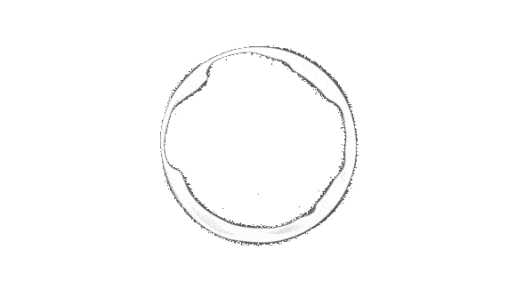

RosarioLive
Sorry, your browser does not support the audio element HTML5.

Seleciona Tu Radio
InLive-OnAir
RosarioLive I
RosarioLive II
RosarioLive III
RosarioLive IV
RosarioLive V
RosarioLive VI
RosarioLive VII
Todos los derechos reservados a
Dorita.
GNU GPL 3.0 ©
Contacto.